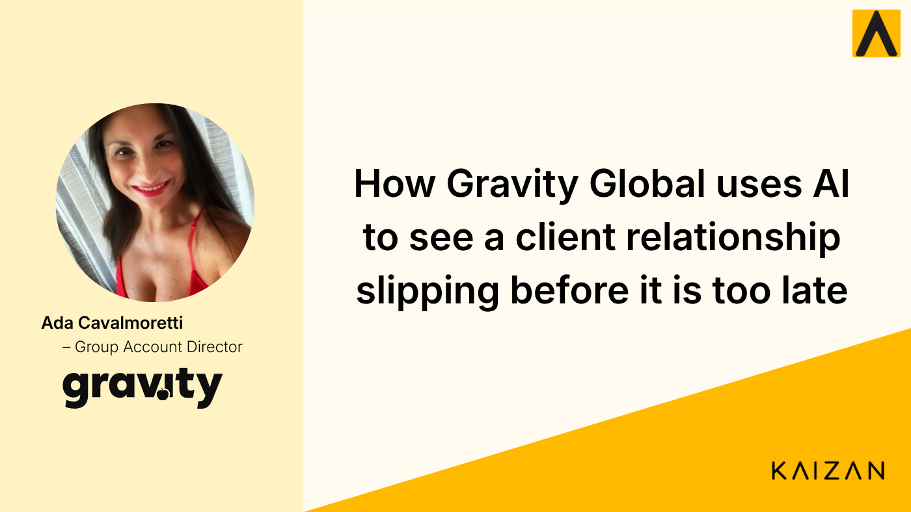

How Gravity Global Uses AI to See a Client Relationship Slipping Before It Is Too Late

Ada Cavalmoretti, Group Account Director at Gravity Global, says tools like Kaizan help client teams spot the quiet signals of a slipping relationship early, back up instinct with data, cut manual admin, and protect the time for the human work that keeps clients close.
When a client relationship goes quiet, you rarely see it coming.
We recently sat down with Ada Cavalmoretti, Group Account Director at Gravity Global, to talk about what running client relationships actually looks like right now for account directors, account managers, and other client services professionals managing multiple accounts: the pressure, the risks, and where the right tools genuinely help.
The conversation covers the client relationship challenges that tend to stay hidden until they affect retention, how AI can surface early signs of disengagement, what client health scoring and post-call recaps add to onboarding and team alignment, and why the best systems support human relationships rather than replace them. If you only take one idea away, make it this one: the relationships that hurt you most are usually the ones you stopped noticing.
Watch the full conversation
Prefer to hear it in Ada's own words? Watch the full interview on YouTube.
More with less, without dropping the human part
The backdrop will be familiar to anyone in an agency. Every team is being asked to do more with less, faster, and stay consistent while they do it. Ada described the squeeze plainly: it is a real challenge when you are working with a lot less budget and a lot less time, but the expectation to deliver strategic, human-centric work has not softened at all.
"It's a real challenge when you're having to do it with a lot less budget, and a lot less time to do it in."
AI is part of how teams are navigating that new world. Used well, it makes the process easier by clearing away the manual, time-consuming tasks that eat the day but add little value, so the focus can go back to the client. That is the point Ada kept coming back to. The goal is not doing more admin faster. It is protecting the time and attention the relationship actually needs.
"Using the tools we have at our disposal, like Kaizan, is helping us reduce the manual tasks, the ones that take a long time but are actually less valuable, so that we can focus on our clients."
The drift you notice too late
Client relationships rarely break in a single moment; one of the most common challenges in client work is that they erode.
Ada described the early signals well. The client becomes a little less engaged. The feedback gets vague. You start to see less interest, less caring. Nothing is said, but something has shifted.
That is when the difference between healthy collaboration and a transactional relationship starts to show, and it is a dangerous place to be. As she put it, it can develop very slowly, sitting underneath everything, and sometimes you do not realise it is happening until it already has.
"Where your partnership becomes more transactional, it's really dangerous, because it can be very slow in developing. It just sits underneath, and sometimes you don't realise it's happening."
This is the real cost of doing more with less. When your attention is stretched across a full book of clients, the quiet signals are the first thing to slip past you. By the time the problem is obvious, you are already on the back foot.
Instinct is good. Confirmation is better.
Experienced account directors and other experts are not short on instinct, but even they benefit from confirmation. They can usually feel when something is off. Ada was clear that the value of the right visibility is not that it replaces that instinct, but that it sharpens and confirms it.
She talked about being able to gauge the factors that are hard to hold in your head across every account: engagement, how often you are actually interacting, the sentiment underneath the conversation. Experience helps, she said, but it is really helpful to have something that gives you that insight and that information.
"You have a good instinct yourself, but it's really helpful to have a tool that gives you that insight, that information."
Part of the value is validation. Sometimes, she noted, it is not just about knowing what you know, but having it confirmed. And part of it is simple recall. You already know what needs doing, but with so much on at once, being reminded of the right thing at the right moment matters.
"Sometimes it's not just about knowing what you know, but having it confirmed. It's equally helpful."
Never walk into a call cold
The post-call recaps came up again and again, and not for the reason you might expect.
They are useful after a meeting, yes. But Ada said their real power shows up when there is a diary clash and she cannot attend. Instead of booking yet another call so a colleague can download everything, she can open the recap, get up to speed on what was said, the actions, the next steps, and AI Helpers that automate follow-up actions, and step straight into action.
"I can go into the recap and get myself up to speed with everything that's been said, the actions, the next steps. I don't have to set up yet another call for my colleagues to download all the information. I can step into action immediately."
Because the platform captures and unifies every client interaction to create structured memory, with integrations across CRMs and other tools, that context runs broader than a single meeting. It gives teams more structure without limiting creativity, and supports the wider systems they rely on, so they can also tap into other APIs as needs grow. It covers the account, the market, and the competitors. Ada found that especially valuable for onboarding, whether it is a new recruit finding their feet or someone already in the agency moving from one client to another and needing to get up to speed fast on the wider company context and the specific project context.
The scoring she cannot stop checking
If there was one thing Ada returned to most, it was the client health scoring using the CARE framework. She admitted, with a laugh, that she is a little obsessed with it. How are we doing? Has anything changed? What have I not thought about? And most importantly, what can I do to make it better?
"I've got to be honest, I'm quite obsessed with the scoring. How are we doing? Has anything changed? What can I do to make it better?"
That last question is the whole point. A score only earns its place if it prompts an action and, in addition, helps AI Assistants surface expansion opportunities for clients. Being able to look at a dashboard and understand at a glance the number behind how a client is doing gives you clearer visibility and a better shot at client success, so you can spot what might matter sooner and catch risk earlier rather than after the drift sets in. In one way, that is what the platform is for: proactive upsell and risk detection to maximise the potential of every client.
Like having a knowledgeable colleague
We asked Ada to describe Kaizan in three words. She could not quite stop at three, and where she landed had nothing to do with software: knowledgeable, helpful, and like a friend or a colleague. Almost, she said, like somebody else she can ask a question to.
"Knowledgeable, helpful, and like a friend, like a colleague. It's almost like somebody else that I can ask a question to."
That is the version of AI worth building toward for client services teams in the industry: something that supports a more dynamic client team while keeping a consistent team from start to finish, not something that quietly replaces the human relationship, but something that protects it. It catches the signals you would have missed, confirms the instincts you already trust, and gives you back the time and clarity to do the strategic, human work that protects room for growth and innovation and keeps clients close.
In a world of more with less, that is what stops a relationship from going quiet before you ever see it coming.